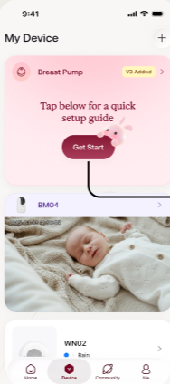
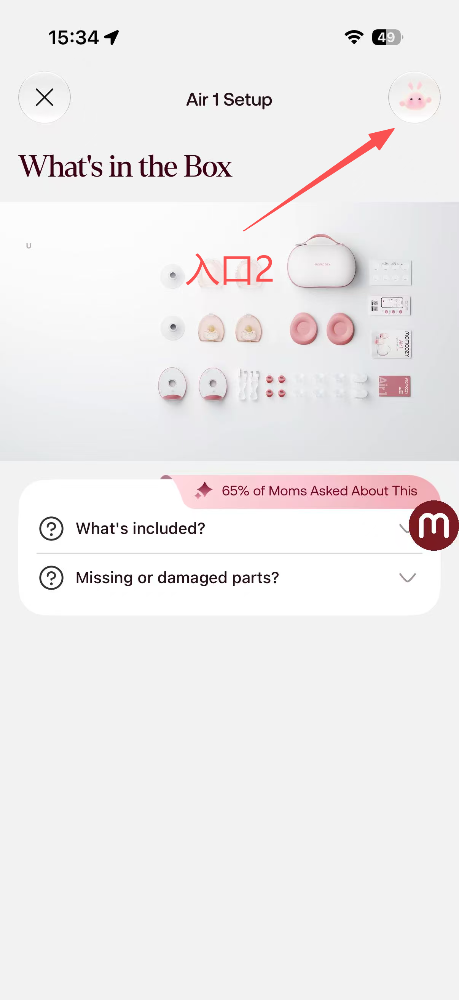
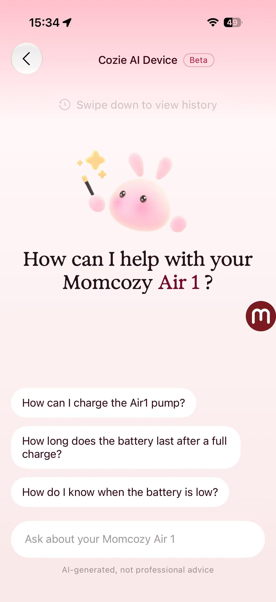
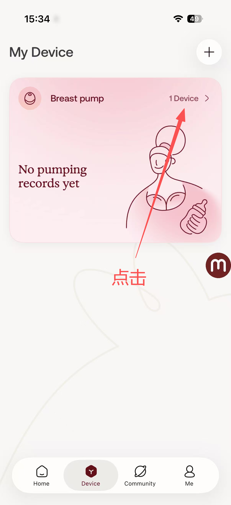
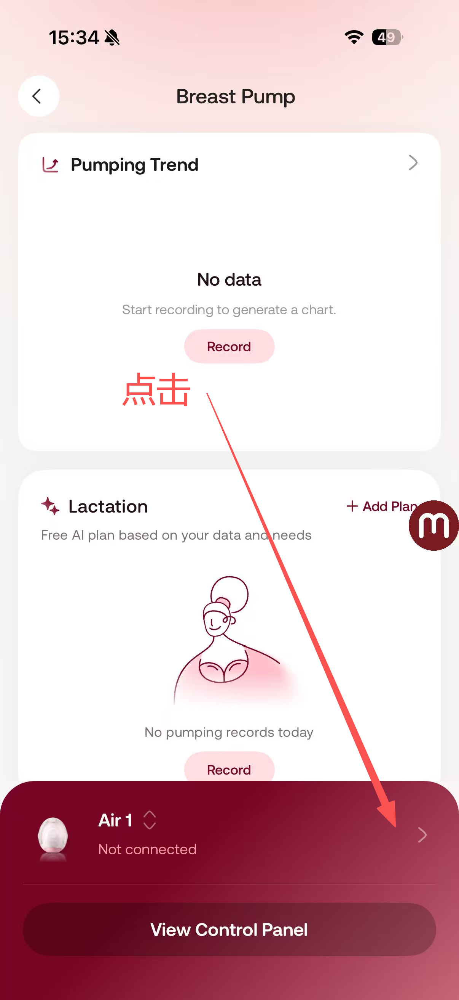
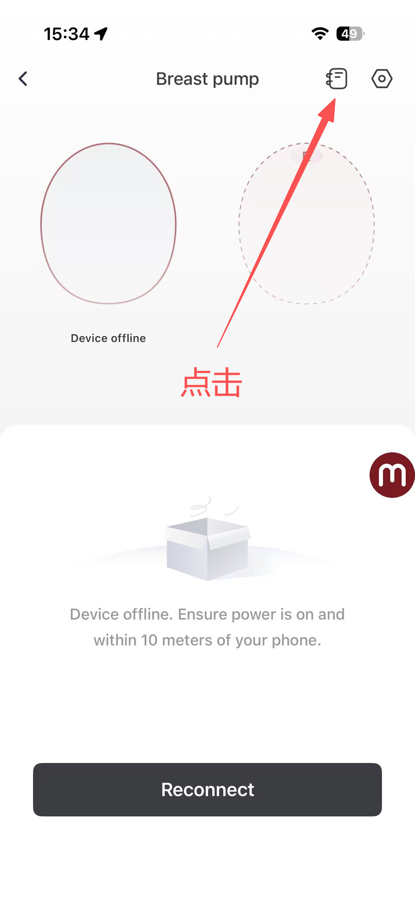
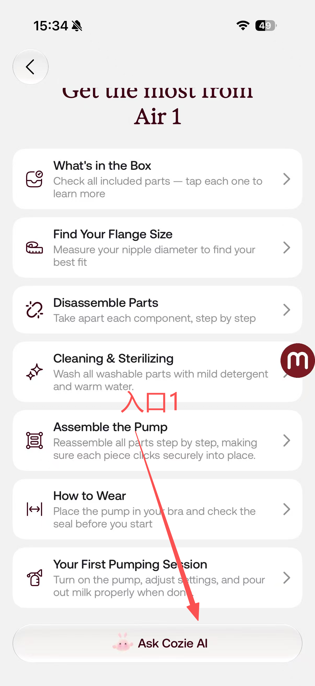

设备助手 1.0
设备助手核心能力
数据分析 · 统计与总结
—
【指标一】
【占位说明】
—
【指标二】
【占位说明】
—
【指标三】
【占位说明】
—
【指标四】
【占位说明】
【占位总结】这里写一段对上面数据的解读与总结，例如整体使用趋势、问题解决率的变化、用户反馈亮点等。数据到位后替换即可。
设备助手 2.0 · 功能介绍
设备助手 2.0 能帮你做什么
扫码安装
扫码下载，开启设备助手 2.0
打开相机扫一扫，
下载并安装 App
须知需要绑定 Air 1 吸奶器设备才能体验；首次登录请记得选择「美国区」（该功能暂时为美区独属功能）
扫码下载 App
如何体验
两条路径，进入设备助手 2.0
新手指引
首次绑定 Air 1，进入新手引导流程
3 步进入
第 1 步点击 Get Started 开始引导
第 2 步7 步引导，每一步右上角都有快捷入口
第 3 步欢迎页展示当前步骤用户最关心的问题
常驻入口
完成新手指引，从 Air 1 设备控制页唤出
5 步进入
第 1 步聚合卡片进入
第 2 步进入 Air 1 控制页面
第 3 步右上角的常驻入口
第 4 步指南页底部点击 Ask Cozie AI🎉 唤起 Cozie AI抵达设备助手 2.0
设备助手 3.0
【占位标题】设备助手 3.0 · 能力拓展
【占位说明】这里写一段对 3.0 拓展方向的总体介绍。下面用时间线卡片列出规划中的方向，素材/文案到位后替换。
【拓展方向一】
规划中
- 【占位】要点一
- 【占位】要点二
【拓展方向二】
规划中
- 【占位】要点一
- 【占位】要点二
【拓展方向三】
规划中
- 【占位】要点一
- 【占位】要点二